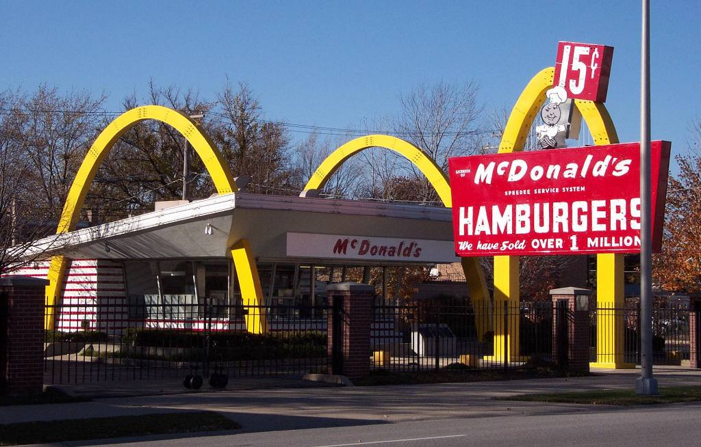

Hitos de McDonald's
- 1940: Se funda el primer restaurante McDonald's en San Bernardino, California.
- 1955: Ray Kroc abre el primer franquiciado de McDonald's en Des Plaines, Illinois.
- 1961: Kroc compra la compañía McDonald's y empieza a expandir la marca internacionalmente.
- 1971: McDonald's abre su primer restaurante en Japón.
- 1984: Se lanza el Happy Meal, un menú especial para niños.
- 2006: McDonald's lanza su nueva campaña de marketing "I'm Lovin' It".
- 2020: McDonald's se compromete a reducir el uso de plástico en sus empaques.
